دليل Weso Live Studio
كل حاجة في البرنامج خطوة بخطوة وبالصور. مش لازم تقرا كله: ابدأ بالـ 3 خطوات دول، وارجع للباقي لما تحتاجه.
1التسطيب وأول تشغيل
البرنامج بيشتغل على ويندوز 10 و 11.
- حمّل البرنامج من الموقع (زرار "حمّل وجرّب 14 يوم مجانًا") وسطّبه.
- أول ما تفتحه هيظهرلك كود جهازك (بيبدأ بـ
WESO-)، والبرنامج بينسخه لوحده وبيفتحلك صفحة التفعيل في المتصفح والكود مكتوب فيها. - اكتب اسمك ورقم الواتساب وحسابك على تيك توك ودوس "ابدأ التجربة المجانية". البرنامج هيفتح لوحده خلال ثواني.
- لو المتصفح ما فتحش، دوس في نافذة البرنامج "المتصفح ما فتحش؟ سجّل من هنا" وسجّل من جوه البرنامج.
بعد التسجيل بيظهر معالج الإعداد: 3 خطوات بسيطة (اسم حسابك، وروابط OBS، وتجربة أليرت). تقدر تتخطاه وترجعله في أي وقت من الإعدادات.
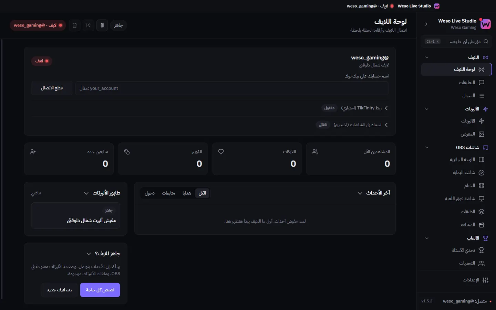
2ربط حسابك على تيك توك
- من اللايف ← لوحة اللايف اكتب اسم حسابك على تيك توك (من غير @) ودوس اتصال.
- لو مش لايف دلوقتي، البرنامج بيستنى ويتصل لوحده أول ما تفتح لايف.
- أول ما يتصل هتشوف "لايف" فوق، والأرقام بتتحرك: المشاهدين واللايكات والكوينز والمتابعين، وآخر الأحداث لحظة بلحظة.
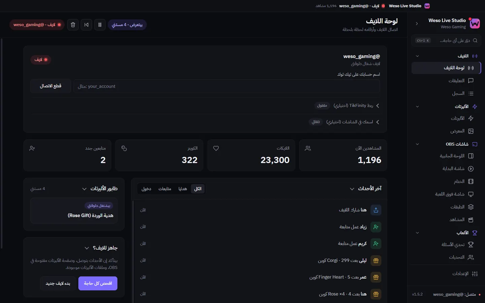
اختياري
- ربط برنامج خارجي: لو بتستخدم برنامج ربط خارجي بيبعت أحداث اللايف، البرنامج يقدر ياخد الأحداث منه كمان.
- اسمك في الشاشات: الاسم اللي بيظهر في اللوحة الجانبية وشاشة البداية والختام. لو سيبته فاضي، بيظهر اسمك وصورتك من تيك توك لوحدهم.
- جاهز للايف؟ دوس "افحص كل حاجة" قبل اللايف: بيتأكد إن الأحداث بتوصل، وصفحة الأليرتات مفتوحة في OBS، وملفات الأليرتات موجودة.
3حط البرنامج في OBS
كل شاشة في البرنامج ليها رابط. الرابط ده بيتحط في OBS كـ Browser Source، وهو اللي بيظهر على البث.
- في البرنامج افتح الشاشة اللي عاوزها (مثلًا الأليرتات) ودوس نسخ جنب "رابط OBS".
- في OBS: دوس + تحت Sources ← Browser ← سمّيه (مثلًا "أليرتات") ← OK.
- الصق الرابط في خانة URL، وخلي Width =
1920و Height =1080← OK. - كرّر نفس الخطوات لأي شاشة تانية (اللوحة الجانبية، الطبقات، تحدي الفرق…).
5الأليرتات
الأليرت = اللي بيظهر على البث لما يحصل حدث في اللايف (هدية، فولو، لايكات، كلمة في الشات…).
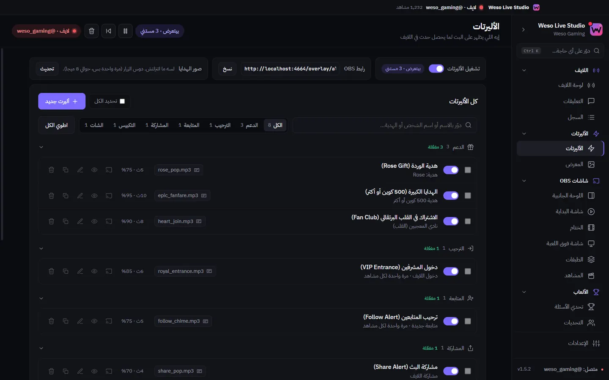
أليرت جديد
- دوس + أليرت جديد.
- الاسم: أي اسم يفكّرك بيه (مثلًا "ترحيب المتابعين").
- بيظهر إزاي: صوت + نص، أو فيديو (MP4 / WebM)، أو صورة / GIF، أو صوت بس.
- الحدث: هدية معينة بالاسم، هدية بعدد كوينز، تكبيس (لايكات)، متابعة جديدة، مشاركة اللايف، نادي المعجبين، صندوق كنز، اشتراك، كلمة في الشات، دخول اللايف، دعم خارجي من لينك الدعم الخارجي، أو يدوي بس.
- مين يقدر يشغّله: الكل، أو المتابعين بس، أو المشتركين، أو المشرفين، أو أكبر داعم، أو شخص معين بالاسم.
- الميديا: اختار الفيديو أو الصورة والصوت من جهازك أو من المعرض.
- النص: الكلام اللي بيظهر (تقدر تحط اسم الشخص والهدية)، واللون، وشكل الإطار (صورة الحساب، نيون، دهبي بتاج، قوس قزح، بجناحين…).
- المدة والصوت، واستنى بين كل مرة والتانية (عشان الأليرت ما يتكررش بسرعة)، واستنى لنفس الشخص.
- دوس حفظ، وبعدين جرّبه من زرار ▶ جنبه.
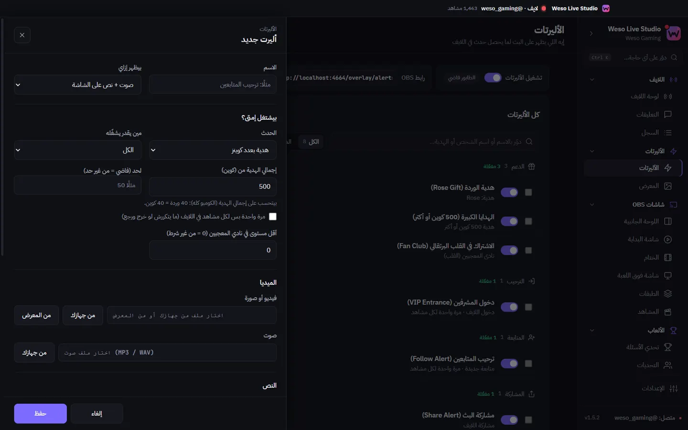
حاجات تانية في الشاشة دي
- تشغيل الأليرتات: المفتاح فوق بيوقف كل الأليرتات مرة واحدة.
- الفلتر والبحث: تدوّر بالاسم أو اسم الشخص أو الهدية.
- اطوي الكل / افتح الكل: بيطوي المجموعات بس (مش بيوقف الأليرتات).
- تحديد الكل ثم مسح: بيحدد الأليرتات الظاهرة قدامك بس.
- اللي اتعرض في اللايف ده: مين، وأنهي أليرت، والساعة كام. دوس "إعادة" عشان تعرضه تاني.
6المعرض (فيديوهاتك وأصواتك)
المعرض بيعرض كل فيديوهات وأصوات الأليرتات اللي في فولدراتك، عشان تختار منها بسهولة.
- دوس إضافة فولدر واختار الفولدر اللي فيه أليرتاتك (أو اكتب مكانه).
- الملفات بتظهر كلها، وتقدر ترتّبها بالاسم أو المدة أو التاريخ أو الحجم.
- من محرر الأليرت دوس من المعرض واختار الملف.
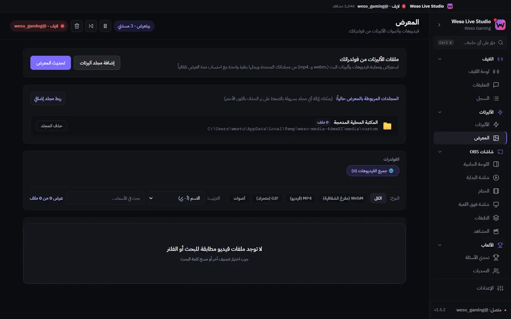
7اللوحة الجانبية
لوحة بتظهر جنب البث فيها الشات والداعمين والأرقام، وانت بتلعب.
- اختار إيه اللي يظهر فيها من "إيه اللي يظهر في اللوحة"، وشوف شكلها في المعاينة.
- انسخ رابطها وحطه في OBS (زي الخطوة 3).
- تقدر تعرض أي تعليق على الشاشة بضغطة (شوف التعليقات).
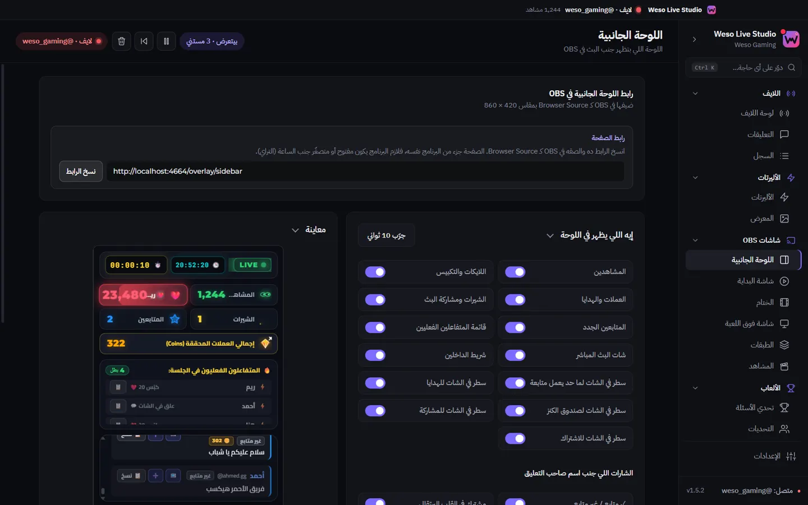
8شاشة البداية
الشاشة اللي بتظهر قبل ما اللايف يبدأ: عداد تنازلي، وأسماء الناس اللي بتدخل وهي بتتحرك.
- العداد التنازلي: المدة اللي هيعدّها.
- حركة الأسماء ونصوص الشاشة وعناصر الشاشة: اختار اللي يظهر وشكله.
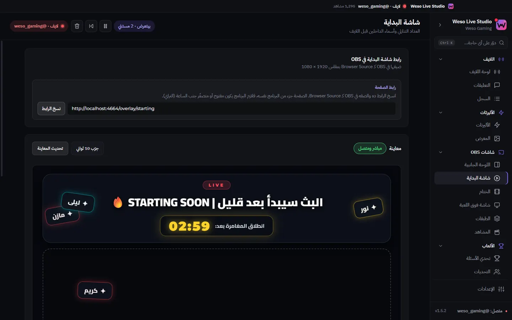
9الختام
تتر النهاية: شكر لأبطال الدعم والهدايا والمتابعين الجداد، زي تتر الأفلام.
- ضيف بياناتك (حساباتك ورسائل شخصية) من "بياناتك في التتر".
- اختار الخط واللون والحجم، وإيه اللي يظهر في التتر، وشوفه في المعاينة.
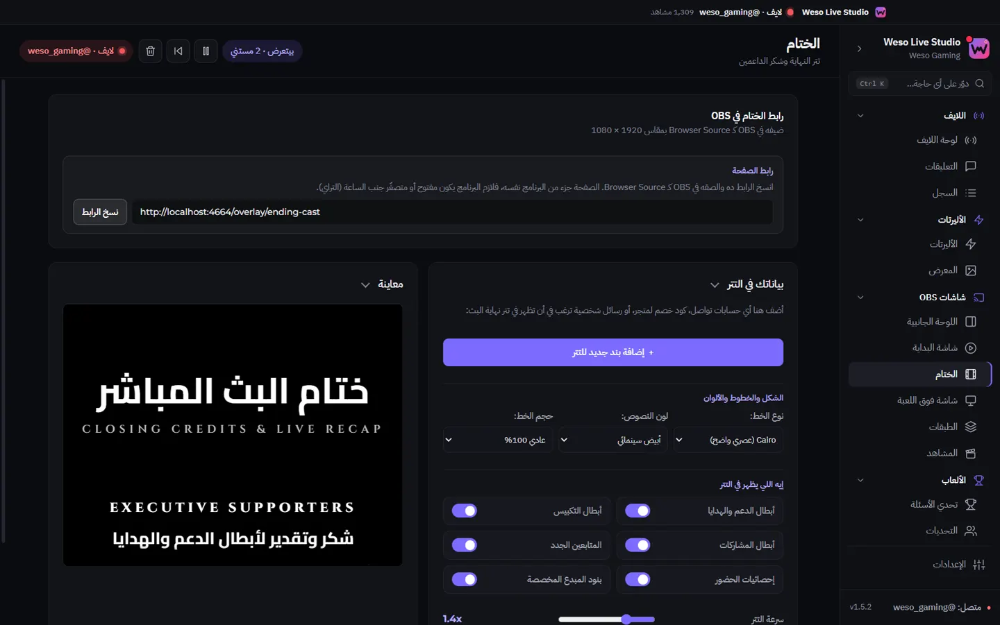
10شاشة فوق اللعبة
نافذة صغيرة بتظهر فوق اللعبة نفسها (مش على البث) فيها الشات والتنبيهات، من غير ما تعطّل الماوس.
- افتحها أو اقفلها بـ Ctrl+Alt+H (لو فعّلت الاختصارات)، أو من الأيقونة اللي جنب الساعة.
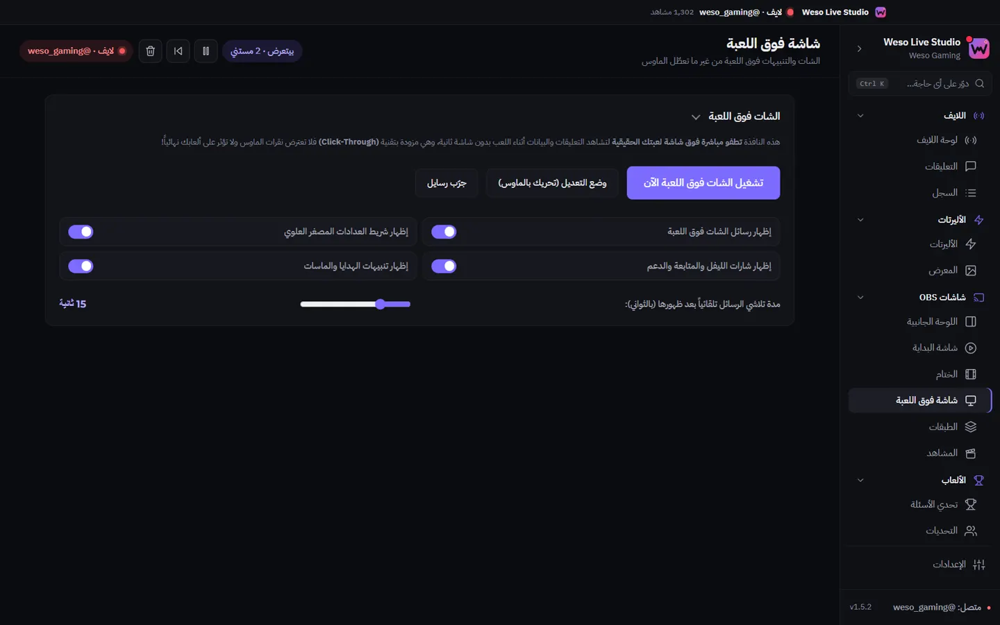
11الطبقات
حاجات بتظهر فوق البث: ألعاب نارية بالهدايا، ونافورة قلوب مع اللايكات، وأكبر الداعمين، وعدد المشاهدين، وآخر واحد كبّس، وغيرها.
- وقّف الماوس على أي طبقة تشوف معاينتها.
- كل طبقة ليها رابط تحطه في OBS، وزرار تجربة.
- "الثيم العام" بيغيّر شكل كل الطبقات مرة واحدة.
- دوس ⭐ عشان تحط الطبقة في المفضلة.
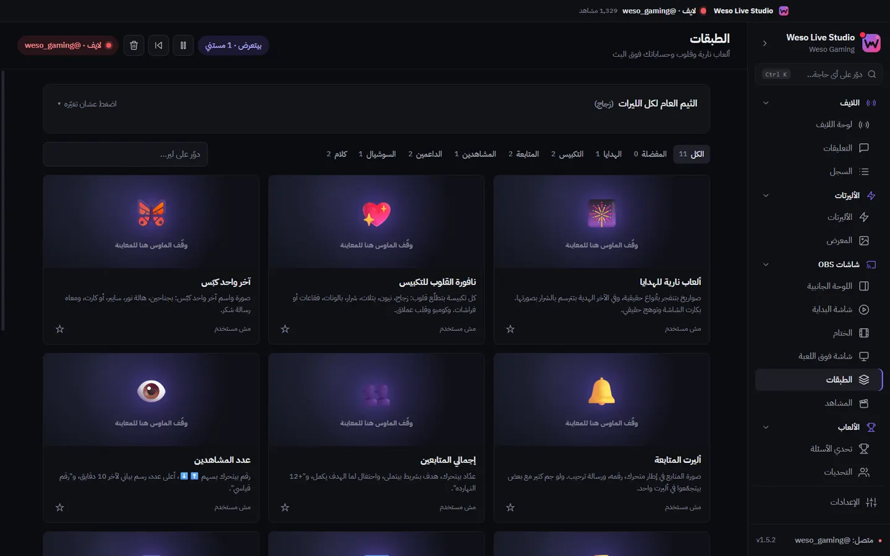
12المشاهد
بدل ما تحط 5 روابط في OBS: رتّب كذا طبقة مع بعض في مشهد واحد، وخد رابط واحد بس.
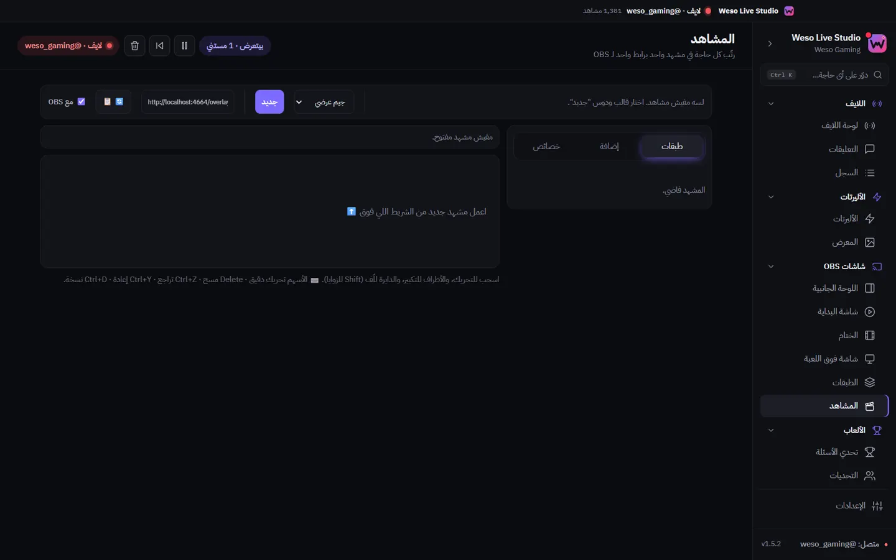
13التعليقات
اعرض أي تعليق من الشات على الشاشة، واعمل طابور أسئلة تجاوب عليها واحد واحد.
- الاختصارات: Ctrl+Alt+X إظهار/إخفاء، Ctrl+Alt+N اللي بعده، Ctrl+Alt+B اللي قبله.
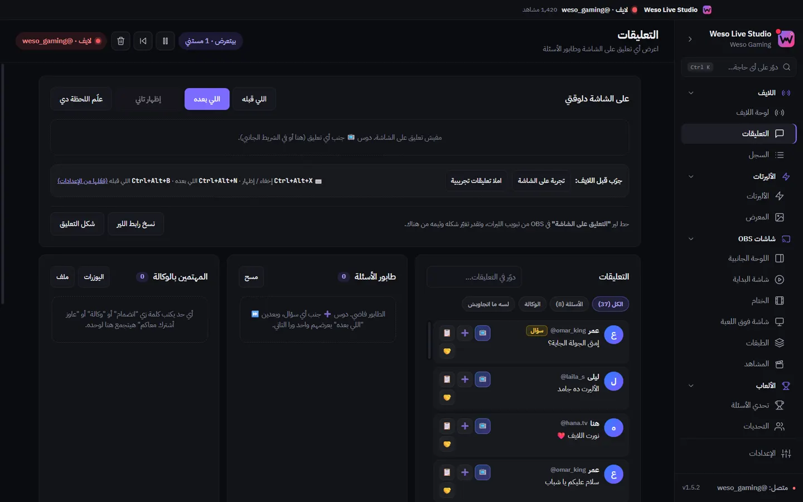
14تحدي الأسئلة
مسابقة في اللايف: السؤال بيظهر على الشاشة، والناس بتجاوب برقم (1، 2، 3، 4) في الشات، وفي الآخر بطل.
- اختار مجموعة أسئلة (فيه مجموعة جاهزة، وتقدر تعمل مجموعاتك وأسئلتك).
- دوس ابدأ المسابقة، وبعدين امشي خطوة خطوة: اقفل الإجابات ← العجلة ← الترتيب ← اللي بعده ← أعلن البطل.
- الخطوة الجاية بالكيبورد: Ctrl+Alt+Q.
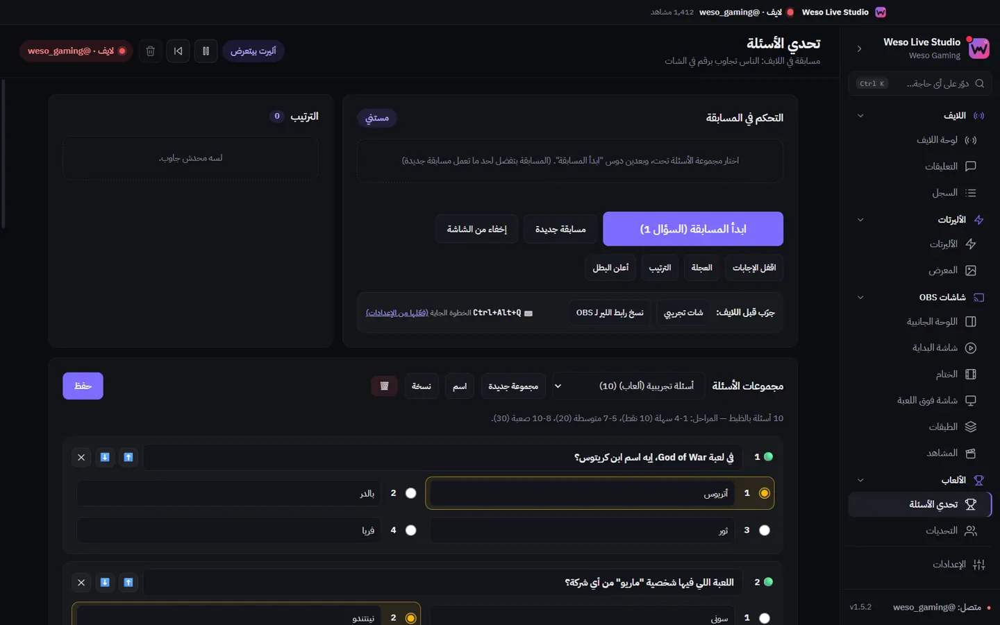
15تحدي الفرق
الجمهور فريقين (أحمر وأزرق)، وكل فريق ليه هداياه. الهدية بتزوّد نقط فريقها، واللي يجمع أكتر قبل الوقت يكسب.
- اختار هدايا كل فريق ونقط كل هدية، وأسامي الفريقين وألوانهم.
- اختار معركة بوقت (مثلًا دقيقتين) أو نتيجة دايمة.
- دوس ابدأ (أو Ctrl+Alt+T). أكبر داعم لكل فريق بيظهر على الشاشة.
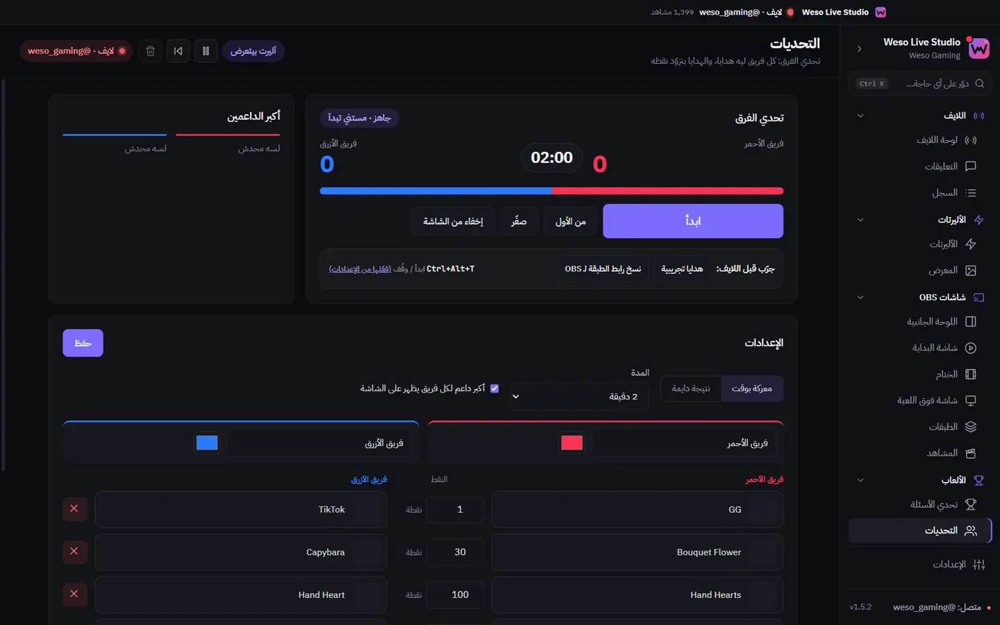
16سجل اللايف
كل اللي حصل في اللايف: الهدايا، ومين دعم، والأليرتات، وليه أليرت معيّن ما ظهرش. أول مكان تبص فيه لو حاجة ما اشتغلتش.
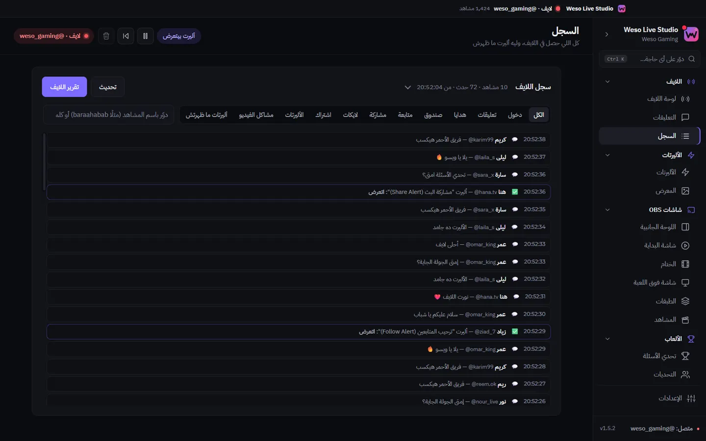
17الإعدادات
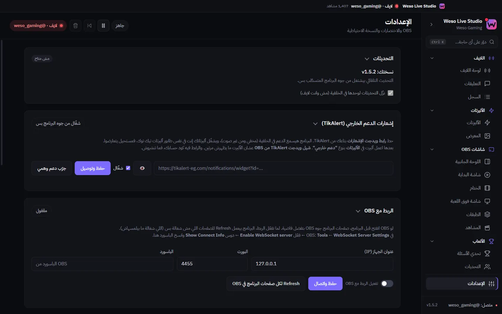
اشتراكي
باقتك، ولحد إمتى، وكام يوم فاضل، وكود جهازك، وزرار التجديد.
التحديثات
البرنامج بيدوّر على تحديث لوحده، وبينزّله، وعمره ما بيتسطّب وانت لايف: بيتسطّب لما تقفل البرنامج. ولما ينزل تحديث بيظهرلك شريط فوق البرنامج "فيه نسخة جديدة".
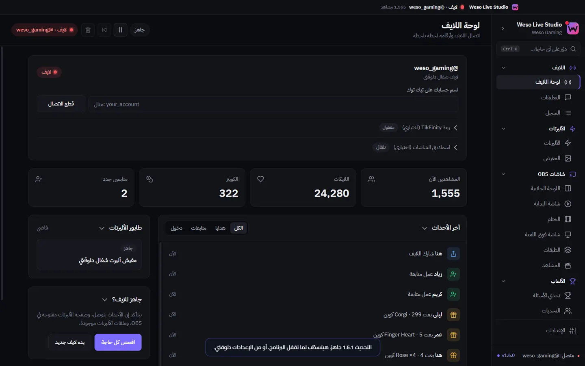
الربط مع OBS (اختياري)
لما تفعّله، البرنامج بيعمل Refresh لصفحاته في OBS لوحده. في OBS: Tools ← WebSocket Server Settings ← فعّل Enable WebSocket server ← دوس Show Connect Info وانسخ الباسورد هنا.
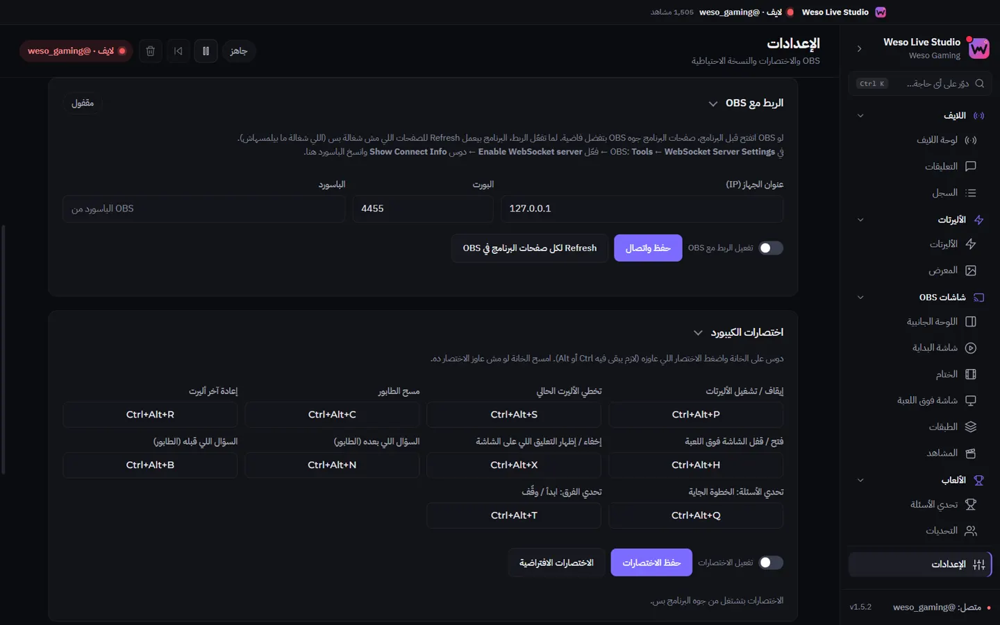
اختصارات الكيبورد
فعّل "تفعيل الاختصارات" عشان تتحكم في اللايف من غير ما تفتح البرنامج:
| الاختصار | بيعمل إيه |
|---|---|
| Ctrl+Alt+P | إيقاف / تشغيل الأليرتات |
| Ctrl+Alt+S | تخطي الأليرت الحالي |
| Ctrl+Alt+C | مسح طابور الأليرتات |
| Ctrl+Alt+R | إعادة آخر أليرت |
| Ctrl+Alt+H | فتح / قفل شاشة فوق اللعبة |
| Ctrl+Alt+X | إظهار / إخفاء التعليق على الشاشة |
| Ctrl+Alt+N / Ctrl+Alt+B | السؤال اللي بعده / اللي قبله (الطابور) |
| Ctrl+Alt+Q | تحدي الأسئلة: الخطوة الجاية |
| Ctrl+Alt+T | تحدي الفرق: ابدأ / وقّف |
تقدر تغيّر أي اختصار: دوس على الخانة واضغط الاختصار اللي عاوزه (لازم يبقى فيه Ctrl أو Alt).
نسخة احتياطية من الإعدادات
بتحفظ كل إعداداتك (الأليرتات، الشاشات، أماكن الفولدرات، الاختصارات) في ملف صغير. احتفظ بيه، ولو غيّرت جهازك أو سطّبت من جديد، ارجعه بضغطة.
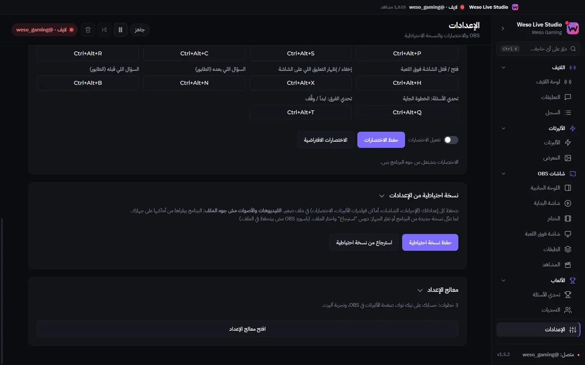
لينك الدعم الخارجي ومعالج الإعداد
لو بتستقبل دعم من موقع دعم خارجي، حط لينك الدعم الخارجي والبرنامج يعرضه كأليرت. ومعالج الإعداد ممكن تشغّله تاني في أي وقت.
18وانت لايف
- البرنامج عمره ما بيقفل وهو مفتوح، ولا في نص لايف. التأكد من الاشتراك بيحصل بس وانت بتفتحه.
- وضع اللايف: أول ما تبقى لايف، النقطة اللي على اللوجو بتحمر، وكل حركات البرنامج بتقف عشان الجهاز كله يبقى للبث، وشريط التحديث بيستخبى.
- التحكم السريع فوق في كل الصفحات: إيقاف الأليرتات مؤقتًا، وتخطي الأليرت الحالي، ومسح الطابور.
- الأيقونة اللي جنب الساعة (الزرار اليمين): فتح البرنامج، وشاشة فوق اللعبة، والبحث عن تحديثات، ورقم نسختك، وفصل الاتصال (بيسألك الأول).
- الأليرتات بتشتغل من جهازك مش من النت، فالنت كله بيروح للبث.
19الاشتراك ونقل الترخيص
التجربة والاشتراك
- التجربة 14 يوم كاملة من غير أي حدود.
- لما تخلص: اختار الباقة من الأسعار، وحوّل، وبلّغنا من "دفعت؟" في البرنامج أو صفحة التفعيل، أو ابعت صورة التحويل واتساب.
- أول ما نفعّلك، البرنامج يفتح لوحده (أو دوس "تحقق تاني").
- إعداداتك وأليرتاتك بتفضل محفوظة طول الوقت.
غيّرت الويندوز؟
مش هتدفع تاني. كود جهازك متاخد من الجهاز نفسه، فلما تسطّب البرنامج تاني الاشتراك بيرجع لوحده.
غيّرت الكمبيوتر كله؟
- سطّب البرنامج على الكمبيوتر الجديد.
- في نافذة الترخيص دوس "عندي ترخيص على كمبيوتر تاني (نقل الترخيص)".
- اكتب رقم الواتساب وحساب تيك توك اللي سجّلت بيهم أول مرة، ودوس "انقل الترخيص" (هيسألك "متأكد؟").
- الترخيص بيتنقل لوحده، والكمبيوتر القديم بيتقفل. النقل التلقائي متاح مرة كل 30 يوم، ولو محتاج قبل كده كلّمنا.
20عندي مشكلة
| المشكلة | الحل |
|---|---|
| الأليرت ما ظهرش | افتح سجل اللايف، هتلاقي مكتوب ليه (مثلًا مستني وقت بين كل مرة، أو الشرط ما اتحققش). وتأكد إن صفحة الأليرتات متحطة في OBS والبرنامج مفتوح. |
| صفحة البرنامج في OBS فاضية | البرنامج لازم يكون مفتوح. دوس Refresh على الـ Source، أو فعّل الربط مع OBS. |
| فيديو الأليرت واقف أو متقطع في OBS | استخدم فيديو WebM بخلفية شفافة بدل MP4. |
| البرنامج مش بيتصل باللايف | تأكد إنك كاتب اسم الحساب صح من غير @، وإنك لايف فعلًا. البرنامج بيتصل لوحده أول ما اللايف يبدأ. |
| الأرقام واقفة | شوف الحالة فوق: لو "غير متصل" دوس اتصال تاني. لو بتستخدم برنامج ربط خارجي، اتأكد إنه شغال. |
| عاوز أرجّع إعداداتي | من الإعدادات ← نسخة احتياطية ← استرجع الملف. |
| نافذة الترخيص بتقول "محتاج إنترنت" | البرنامج بيتأكد من الاشتراك أونلاين، وبيكمّل 3 أيام من غير نت. وصّل النت ودوس "تحقق تاني". |